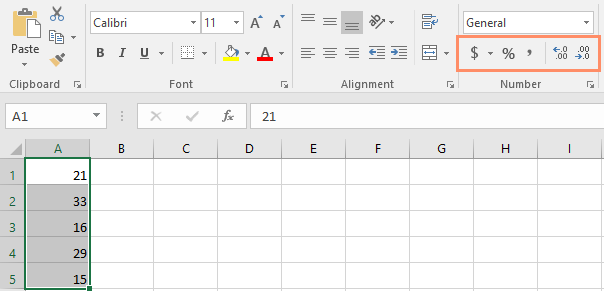
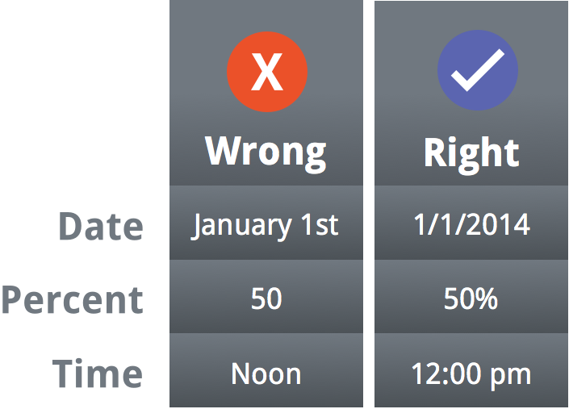
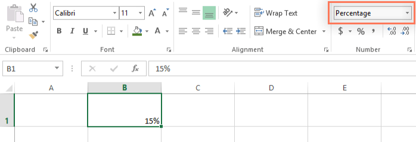
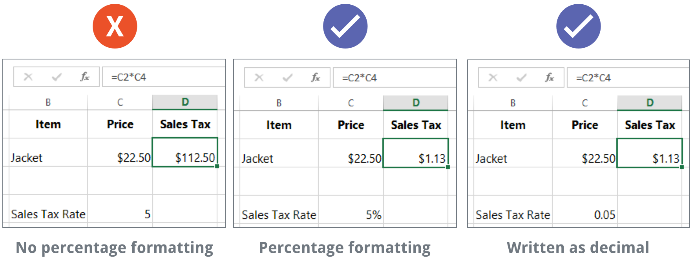

Introducere

 Utilizarea corectă a formatelor de numere
Utilizarea corectă a formatelor de numere


Ori de câte ori lucrați cu o foaie de calcul, este o idee bună să utilizați formatele numerice adecvate pentru datele dvs. Formatele de numere indică foii de calcul exact ce tip de date utilizați, cum ar fi procente (%), moneda ($), ore, date și așa mai departe.
De ce să folosiți formatele de numere?Formatele numerice nu numai că fac foaia de calcul mai ușor de citit, dar o fac și mai ușor de utilizat. Când aplicați un format numeric, spuneți foii de calcul exact ce tipuri de valori sunt stocate într-o celulă. De exemplu, formatul datei indică foii de calcul că introduceți anumite date calendaristice. Acest lucru permite foii de calcul să înțeleagă mai bine datele dvs., ceea ce vă poate ajuta să vă asigurați că datele dvs. rămân consecvente și că formulele sunt calculate corect.
Aplicarea formatelor numericeLa fel ca și alte tipuri de formatare, cum ar fi schimbarea culorii fontului, veți aplica formate de numere selectând celule și alegând opțiunea de formatare dorită. Există două moduri principale de a alege un format de număr:
- Accesați fila Acasă, faceți clic pe meniul derulant Format număr din grupul Număr și selectați formatul dorit.
- Faceți clic pe una dintre comenzile de formatare rapidă a numerelor de sub meniul drop-down.


În acest exemplu, am aplicat formatul de număr de monedă, care adaugă simboluri valutare ($) și afișează două zecimale pentru orice valoare numerică.
Dacă selectați orice celule cu formatare numerică, puteți vedea valoarea reală a celulei în bara de formule. Foaia de calcul va folosi această valoare pentru formule și alte calcule.
Utilizarea corectă a formatelor de numere
Formatarea numerelor înseamnă mai mult decât selectarea celulelor și aplicarea unui format. Foile de calcul pot aplica automat formatarea numerelor pe baza modului în care introduceți datele. Aceasta înseamnă că va trebui să introduceți datele într-un mod pe care programul îl poate înțelege, apoi să vă asigurați că celulele folosesc formatul numeric adecvat. De exemplu, imaginea de mai jos arată cum să utilizați corect formatele de numere pentru date, procente și ore:

Acum că știți mai multe despre cum funcționează formatele de numere, ne vom uita la câteva formate de numere în acțiune.
Formate procentualeUnul dintre cele mai utile formate de numere este formatul procentual (%). Afișează valori sub formă de procente, cum ar fi 20% sau 55%. Acest lucru este util în special atunci când se calculează lucruri precum costul impozitului pe vânzări sau un bacșiș. Când tastați un semn de procente (%) după un număr, formatul de număr procentual va fi aplicat automat acelei celule.

Există de multe ori când formatarea procentuală va fi utilă. De exemplu, în imaginile de mai jos observați modul în care rata impozitului pe vânzări este formatată diferit pentru fiecare foaie de calcul (5, 5% și 0,05):

După cum puteți vedea, calculul din foaia de calcul din stânga nu a funcționat corect. Fără formatul numărului procentual, foaia noastră de calcul crede că dorim să înmulțim 22,50 USD cu 5, nu cu 5%. Și în timp ce foaia de calcul din dreapta încă funcționează fără formatare procentuală, foaia de calcul din mijloc este mai ușor de citit.
Formate de dateOri de câte ori lucrați cu date , veți dori să utilizați un format de dată pentru a spune foii de calcul că vă referiți la anumite date calendaristice, cum ar fi 15 iulie 2014. Formatele de dată vă permit, de asemenea, să lucrați cu un set puternic de date. funcții care utilizează informații despre oră și dată pentru a calcula un răspuns.
Foile de calcul nu înțeleg informațiile la fel cum ar face-o o persoană. De exemplu, dacă introduceți octombrie într-o celulă, foaia de calcul nu va ști că introduceți o dată, așa că o va trata ca orice alt text. În schimb, atunci când introduceți o dată, va trebui să utilizați un format specific pe care îl înțelege foaia de calcul, cum ar fi lună/zi/an (sau zi/lună/an în funcție de țara în care vă aflați). În exemplul de mai jos, vom introduce 10/12/2014 pentru 12 octombrie 2014. Foaia noastră de calcul va aplica apoi automat formatul numărului de dată pentru celulă.
Acum că avem data formatată corect, putem face diferite lucruri cu aceste date. De exemplu, am putea folosi mânerul de umplere pentru a continua datele prin coloană, astfel încât să apară o zi diferită în fiecare celulă:
Dacă formatarea datei nu este aplicată automat, înseamnă că foaia de calcul nu a înțeles datele pe care le-ați introdus. În exemplul de mai jos, am scris 15 martie. Foaia de calcul nu a înțeles că ne referim la o dată, așa că această celulă folosește încă formatul de număr general.
Pe de altă parte, dacă introducem 15 martie (fără „th”), foaia de calcul o va recunoaște ca dată. Deoarece nu include un an, foaia de calcul va adăuga automat anul curent, astfel încât data va avea toate informațiile necesare. De asemenea, am putea introduce data în mai multe alte moduri, cum ar fi 3/15, 3/15/2014 sau 15 martie 2014, iar foaia de calcul ar recunoaște-o în continuare ca dată.